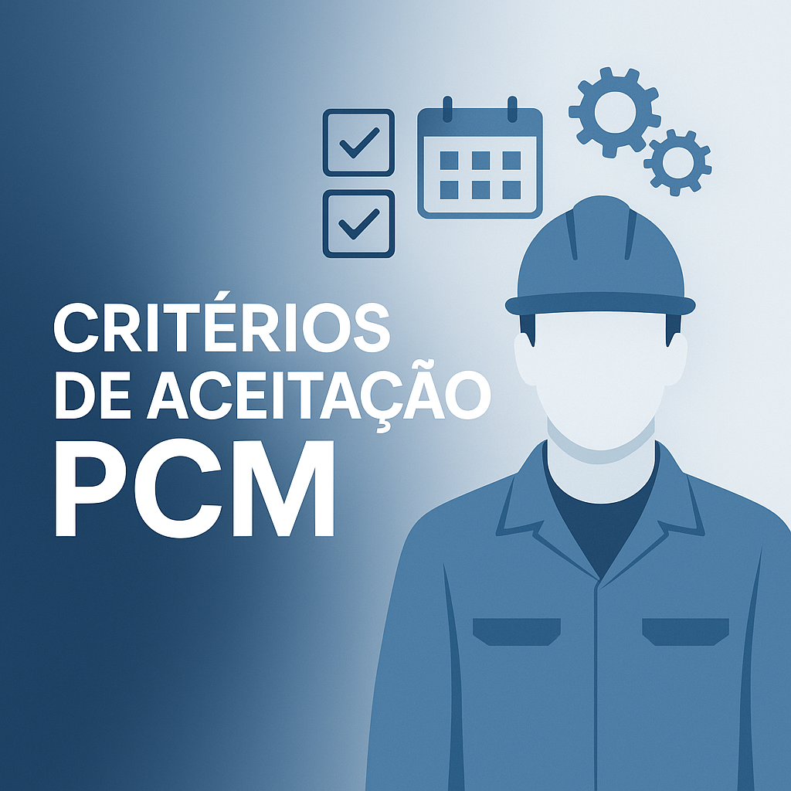

Transformando Manutenção
em Estratégia
Conheça a GEM
O que é GEM?
A GEM (Gestão de Excelência em Manutenção) é uma consultoria especializada em transformar a manutenção industrial em um pilar estratégico. Atuamos junto aos clientes com soluções práticas e sustentáveis, aplicando metodologias modernas e ferramentas visuais adaptadas à realidade de cada operação. Oferecemos desde a estruturação do PCM até o desenvolvimento de lideranças técnicas, com foco na padronização de processos, engajamento das equipes e eficiência operacional. Nosso time alia experiência em campo e visão estratégica para otimizar recursos, reduzir desperdícios e garantir resultados consistentes. Mais do que entregar soluções, construímos com o cliente uma nova forma de fazer manutenção: mais inteligente, integrada e orientada à performance.

Manutenção com vantagens competitivas

Atingimento de metas
Definição e acompanhamento de metas como OBZ, UDT, MTTR, MTBF e R para gerar compromisso e resultados com a equipe.

Gestão Estratégica
Aplicação de metodologias para estruturar e controlar a programação semanal de manutenção, garantindo organização, foco e ganhos de performance com base em modelos eficazes.
Engajamento da Equipe
Criação conjunta de padrões gerenciais (PGs) que garantem práticas validadas, aceitas pela organização e aplicáveis de forma isonômica entre áreas, promovendo engajamento e cultura sólida.

Treinamento Prático
Capacitação contínua com base no CHA (Conhecimento, Habilidades e Atitudes), promovendo aprendizado prático e análise de rotinas.

Manutenção Integrada
Atuação técnica em equipamentos e sistemas industriais, com uso de tecnologias de monitoramento e análise de dados para manutenção preventiva, corretiva e preditiva.

Gestão de Paradas e Projetos
Planejamento e execução de paradas programadas com foco em segurança, cumprimento de prazos e controle de custos.
Critérios de Aceitação PCM
PADRINHO PCM
PRINCÍPIOS PCM

PROGRAMADOR DE MANUTENÇÃO

LÍDER DE MANUTENÇÃO

Cases de Sucesso

Novelis Brasil
A GEM – Gestão de Excelência em Manutenção implementou uma rotina estruturada de manutenção na Novelis, gerando redução de custos, aumento da produtividade e maior segurança operacional.
A padronização dos métodos permitiu que a excelência fosse alcançada por toda a equipe, tornando o processo menos dependente de indivíduos.
“Com o suporte da GEM, conquistamos uma cultura sustentável de excelência operacional.”